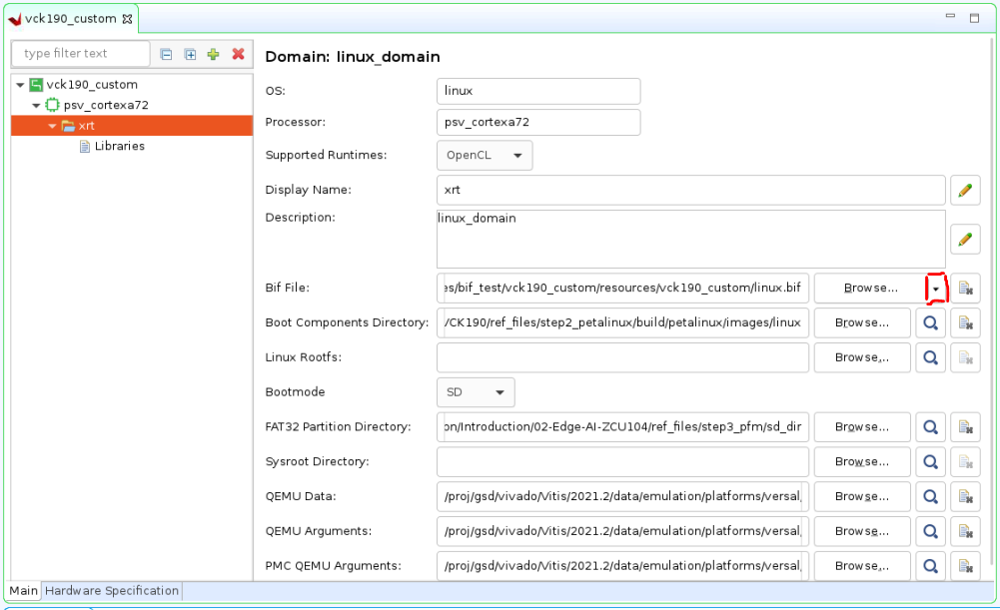

Versal プラットフォーム作成クイック スタート¶
バージョン: 2022.1
[Board]: VCK190
このモジュールでは、短時間でプラットフォームを作成してアプリケーションを実行し、このプラットフォームを VCK190 評価ボードに基づいて検証する 3 つの手順について説明します。
ここでは、CED サンプルからの Versal エクステンシブル プラットフォームを使用し、ビルド済みの Linux 共通イメージおよび Createdts コマンドを使用してソフトウェア コンポーネントを生成します。その後、エンベデッド Versal アクセラレーション プラットフォームを作成します。最後に、Vector Addition サンプルを使用してこのプラットフォームを検証します。また、Linux システム イメージをカスタマイズする必要がある場合は、PetaLinux のカスタマイズに関するページを参照してください。
手順 1: Vivado デザインの作成および XSA の生成¶
ワークスペースを作成します。Vivado を起動していない場合は、起動します。
mkdir WorkSpace と入力します。
cd WorkSpace と入力します。
source <Vitis_Install_Directory>/settings64.shを実行して、Vivado 実行環境を設定します。コンソールに
vivadoと入力して Vivado を実行します。
Versal Extensible Embedded Platform サンプルをダウンロードします。
[Tools] → [Vivado Store] をクリックします。
[OK] をクリックして、ウェブからオープンソースのサンプルのダウンロードに同意します。
[Platform] → [Versal Extensible Embedded Platform] をクリックし、ツールバーのダウンロード ボタンをクリックします。
インストールが終了したら [Close] をクリックします。

Versal エクステンシブル エンベデッド プラットフォーム例のプロジェクトの作成
[File] → [Project] → [Open Example] をクリックします。
[Next] をクリックします。
[Select Project Template] ウィンドウで [Versal Extensible Embedded Platform] をオンにします。
[Project Name] および [Project location] を入力します。[Create project subdirectory] はオンのままにします。[Next] をクリックします。
[Default Part] ページでターゲット ボードを選択します。この例では、Versal VCK190 Evaluation Platform を使用します。[Next] をクリックします。

[Configure Clocks Settings]: このページでは、より多くのクロックをイネーブルし、出力周波数を更新し、デフォルト クロックを定義できます。この例では、デフォルト設定のままにします。
[Configure Interrupt Settings]: このプラットフォームのサポートする割り込みの数を選択できます。63 割り込みモードの場合、カスケード モードで 2 つの AXI_INTC が使用されます。この例では、デフォルト設定のままにします。
[Configure Memory Settings]: このデザイン例では、デフォルトで DDR4 のみをイネーブルにします。LPDDR4 をイネーブルにすると、DDR4 と LPDDR4 の両方がイネーブルになります。この例では、デフォルト設定のままにします。
[Next] をクリックします。
新しいプロジェクト サマリを確認し、[Finish] をクリックします。
しばらくすると、デザイン例が生成されたことがわかります。
生成されたデザインは次のようになります。

この段階で、Vivado ブロック オートメーションにより、CIPS (Control、Interface & Processing System) ブロック、AXI NOC ブロック、AI エンジン、およびすべてのサポート ロジック ブロックを図に追加し、VCK190 のすべてのボード プリセットを適用しました。
ブロック図を生成します。
Flow Navigator で [Generate Block Diagram] をクリックします。

[Synthesis Options] を [Global] にして、生成時間を短縮します。

[Generate] ボタンをクリックします。
注記: このクリティカル警告は無視しても問題ありません。今後、この信号は Vitis で接続されるようになる予定です。

次のスクリプトを使用してハードウェア プラットフォームをエクスポートします。
[File] → [Export] → [Export Platform] をクリックします。これには、Flow Navigator で [IP Integrator] → [Export Platform]、または [Platform Setup] タブの下部にある [Export Platform] ボタンを使用することもできます。
[Export Hardware Platform] ページで [Next] をクリックします。
[Hardware] を選択します。シミュレーションをサポートしない IP がある場合は、ハードウェア XSA とハードウェア エミュレーション XSA をそれぞれ生成する必要があります。[Next] をクリックします。
DFX プラットフォームを作成するわけではないので、[Pre-synthesis] を選択します。[Next] をクリックします。
[Input Name] に VCK190_Custom_Platform と入力して [Next] をクリックします。
ファイル名を vck190_custom_hw にアップデートし、[Next] をクリックします。
サマリを確認します。[Finish] をクリックします。
Vck190_custom_hw.xsa ファイルが
Vivado project locationディレクトリに生成されます。
手順 2: Vitis プラットフォームの作成¶
ザイリンクス ウェブサイトのダウンロード ページから Versal 共通イメージをダウンロードして
WorkSpaceディレクトリに配置し、その共通イメージを解凍します。tar xvf ../xilinx-versal-common-v2022.1.tar.gz .
デバイス ツリー ファイルを作成します。
XSCT ツールを使用して、デバイス ツリー ファイルを生成するコマンドを実行します。
cd WorkSpace source <Vitis_Install_Directory>/settings64.sh xsct
次のように
createdtsコマンドを XSCT コンソールで実行します。createdts -hw <full path>/vck190_custom_hw.xsa -out . -zocl \ -platform-name mydevice -git-branch xlnx_rel_v2022.1 -board \ versal-vck190-reva-x-ebm-02-reva -compile
-hwオプションは、手順 1 で生成された XSA ファイルで、これはvck190_custom_hw.xsaという Vivado プロジェクト ディレクトリにあります。XSCT コンソールには、次の情報が表示されます。この警告メッセージを無視すると、<mydevice/psv_cortexa72_0/device_tree_domain/bsp/> にある system.dtb ファイルが取得されるようになります。pl.dtsi:9.21-46.4: Warning (unit_address_vs_reg): /amba_pl@0: node has a unit name, but no reg property pl.dtsi:41.26-45.5: Warning (simple_bus_reg): /amba_pl@0/misc_clk_0: missing or empty reg/ranges property
コンソールに
exitと入力し、XSCT コンソールを終了します。共通イメージ パッケージの U-Boot イメージには、デフォルトの環境変数がありません。そのため、手動で bootargs をアップデートする必要があります。ここでは、system-user.dtsi を
ref_filesディレクトリに用意します。それをデバイス ツリー BSP ディレクトリにコピーし、次のように system-top.dts に変更して含めます。cp system-user.dtsi mydevice/psv_cortexa72_0/device_tree_domain/bsp/ echo "#include \"system-user.dtsi\"" >> mydevice/psv_cortexa72_0/device_tree_domain/bsp/system-top.dts
dts ファイルを再構築します。
cd mydevice/psv_cortexa72_0/device_tree_domain/bsp/ gcc -I my_dts -E -nostdinc -undef -D__DTS__ -x assembler-with-cpp -o \ system.dts system-top.dts #preprocess the dts file because DTC command can not recognize the #include grammar dtc -I dts -O dtb -o system.dtb system.dts # compile the dts
アップデートされた DTB ファイルは、<mydevice/psv_cortexa72_0/device_tree_domain/bsp/> フォルダーにあります。
Vitis プラットフォームを作成します。
FAT32 パーティションおよびブート コンポーネントに対して 2 つのディレクトリを
WorkSpaceディレクトリに作成します。その後、次のようにイメージを準備します。cd WorkSpace mkdir sd_dir mkdir boot cp xilinx-versal-common-v2022.1/boot.scr sd_dir/ cp xilinx-versal-common-v2022.1/bl31.elf boot/ cp xilinx-versal-common-v2022.1/u-boot.elf boot/ cp mydevice/psv_cortexa72_0/device_tree_domain/bsp/system.dtb boot/コンソールに
sh xilinx-versal-common-v2022.1/sdk.sh -d xilinx-versal-common-v2022.1/ -yと入力して SDK ツールをインストールします。-d オプションは、インストールする場所のディレクトリを指定するためのものです。-y オプションは、確認を意味します。つまり、これはxilinx-versal-common-v2022.1/フォルダーにインストールされます。コンソールに
vitisと入力して Vitis を実行します。Vitis IDE で [File] → [New] → [Platform Project] をクリックして、プラットフォーム プロジェクトを作成します。
プロジェクト名を入力します。この例では、「
vck190_custom」と入力して [Next] をクリックします。[Platform] ページで [Browse] ボタンをクリックし、Vivado で生成された XSA ファイルを選択します。この場合、
<Your Vivado Project Directory>/vck190_custom_hw.xsaにあります。[Next] をクリックします。オペレーティング システムに [linux] を設定します。
プロセッサに [psv_cortexa72] を設定します。
[Finish] をクリックします。

[linux on psv_cortexa72] ドメインをクリックします。
この行の右側にある編集ボタンをクリックして、[Display Name] を
xrtに更新します。これで、XRT がインストールされ、アクセラレーション アプリケーションを実行できる Linux ドメインであることを示します。[Bif File] の設定: ドロップダウン ボタンをクリックして、[Generate BIF] を選択します。BIF ファイルがリソース ディレクトリに生成されます。

[Boot Components Directory]: boot を選択し、[OK] をクリックします。Bootgen は、このディレクトリの BIF で参照されるブート コンポーネントを探し、BOOT.BIN を生成します。
[FAT32 Partition Directory]: sd_dir を選択し、[OK] をクリックします。このディレクトリのファイルは、SD カード イメージの FAT32 パーティションにコピーされます。
[QEMU Data]: step3_pfm/boot/ を選択し、[OK] をクリックします。エミュレーターでは、このディレクトリからブート コンポーネントを使用します。
Vivado の [Explorer] ビューで vck190_custom プロジェクトを選択し、[Build] ボタンをクリックしてプラットフォームを生成します。
注記: QEMU 設定が追加されている場合は、qemu_args.txt を適宜アップデートしてください。
これで手順 2 が終了し、プラットフォーム作成プロセスが完了したので、次はアプリケーションを実行してこのプラットフォームを検証します。
手順 3: Vitis プラットフォームの検証¶
コンソールに
vitisと入力して Vitis を実行します。(Vitis が起動している場合、この手順はスキップしてください)[File] → [New] → [Application Project] をクリックします。
[Welcome] ページで [Next] をクリックします。
[Platform] ページで、リストから [vck190_custom] プラットフォームを選択します。[Next] をクリックします。
[Application project name] を vadd に、ターゲット プロセッサを psv_cortexa72_SMP に設定します。[Next] をクリックします。

Sysroot パス (<xilinx-versal-common-v2022.1/sysroots/cortexa72-cortexa53-xilinx-linux>) を入力します。
RootFS パス (<xilinx-versal-common-v2022.1/rootfs.ext4>) を入力します。
Kernel Image パス (<xilinx-versal-common-v2022.1/Image>) を入力します。
[Next] をクリックします。
[Vector Addition] テンプレートを選択します。[Finish] をクリックします。
vadd_system プロジェクトを選択します。
ツールバーの [Build] (ハンマー アイコン) のドロップダウンをクリックし、[Hardware] を選択します。この手順は、[Active Build Configuration] に [Hardware] を選択し、[Build] アイコンをクリックしても実行できます。
ハードウェアのビルドには時間がかかります。最後に Vitis は、vadd_system/Hardware/package ディレクトリに sd_card.img を生成します。
ハードウェアでのアプリケーションの実行¶
リモート サーバーまたは仮想マシン上でプロジェクトをビルドする場合は、ローカルに
vadd_system/Hardware/package/sd_card.imgをコピーします。sd_card.img を SD カードにプログラムします。詳細な手順は、アンサー #73711 を参照してください。
注記: SD カードをプログラミングした後、システムから正しく取り出してください。
UART コンソールへ接続します。
SD カードを挿入し、SD ブートモード (SW1[4:1] = “1110”: OFF, OFF, OFF, ON) の後電源投入して VCK190 ボードをブートします。
注記: ブート モードの詳細は、『VCK190 評価ボード ユーザー ガイド』を参照してください。
UART コンソールからテスト アプリケーションを起動します。
ザイリンクス ダウンロード ウェブサイトからの共通イメージを使用している場合は、ここをクリックすると表示される手順に従ってアプリケーションを実行します。
自動マウントされた FAT32 パーティションに移動し、次のようにアプリケーションを実行します。
cd /run/media/sd-mmcblk0p1 ./simple_vadd krnl_vadd.xclbin
PetaLinux プロジェクトからのイメージを使用している場合は、ここをクリックすると表示される手順に従ってアプリケーションを実行します。
まず、ユーザー
petalinuxでログインし、新しいパスワード (sudo パスワード) を設定する必要があります。システムにログインします。
petalinux login:petalinux You are required to change your password immediately (administrator enforced). New password: Retype new password: petalinux:~$ sudo su We trust you have received the usual lecture from the local System Administrator. It usually boils down to these three things: #1) Respect the privacy of others. #2) Think before you type. #3) With great power comes great responsibility. Password: petalinux:/home/petalinux#
自動マウントされた FAT32 パーティションに移動し、次のようにアプリケーションを実行します。
petalinux:/home/petalinux# cd /run/media/sd-mmcblk0p1 petalinux:/home/petalinux# ./simple_vadd krnl_vadd.xclbin
UART コンソールに次のように表示されます。
ログを表示
root@petalinux:/run/media/mmcblk0p1# ./vadd binary_container_1.xclbin
EXE: /run/media/mmcblk0p1/simple_vadd
[XRT] WARNING: The xrt.ini flag "opencl_summary" is deprecated and will be removed in a future release. A summary file is generated when when any profiling is enabled, so please use the appropriate settings from "opencl_trace=true", "device_counter=true", and "device_trace=true."
[XRT] WARNING: The xrt.ini flag "opencl_device_counter" is deprecated and will be removed in a future release. Please use the equivalent flag "device_counter."
INFO: Reading krnl_vadd.xclbin
Loading: 'krnl_vadd.xclbin'
[ 74.394840] zocl-drm amba_pl@0:zyxclmm_drm: zocl_create_client: created KDS client for pid(577), ret: 0
[ 74.395731] zocl-drm amba_pl@0:zyxclmm_drm: zocl_destroy_client: client exits pid(577)
[ 74.401000] zocl-drm amba_pl@0:zyxclmm_drm: zocl_create_client: created KDS client for pid(577), ret: 0
Trying to program device[0]: edge
[ 74.937477] [drm] skip kind 29(AIE_RESOURCES) return code: -22
[ 74.938038] [drm] found kind 8(IP_LAYOUT)
[ 74.938641] [drm] found kind 9(DEBUG_IP_LAYOUT)
[ 74.939375] [drm] skip kind 25(AIE_METADATA) return code: -22
[ 74.939688] [drm] found kind 7(CONNECTIVITY)
[ 74.940087] [drm] found kind 6(MEM_TOPOLOGY)
[ 74.940907] [drm] Memory 0 is not reserved in device tree. Will allocate memory from CMA
[ 74.948647] [drm] Memory 1 is not reserved in device tree. Will allocate memory from CMA
[ 74.963753] cu_drv CU.2.auto: cu_probe: CU[0] created
[ 74.974174] cu_drv CU.2.auto: ffff000803cbac10 xrt_cu_intr_thread: CU[0] start
[ 74.989334] [drm] zocl_xclbin_read_axlf f4f049d5-183a-e265-264d-ecfa34a51343 ret: 0
[ 75.037345] [drm] bitstream f4f049d5-183a-e265-264d-ecfa34a51343 locked, ref=1
[ 75.038188] zocl-drm amba_pl@0:zyxclmm_drm: ffff000800323c10 kds_add_context: Client pid(577) add context CU(0xffffffff) shared(true)
[ 75.041054] zocl-drm amba_pl@0:zyxclmm_drm: ffff000800323c10 kds_del_context: Client pid(577) del context CU(0xffffffff)
[ 75.042096] [drm] bitstream f4f049d5-183a-e265-264d-ecfa34a51343 unlocked, ref=0
[ 75.094803] [drm] bitstream f4f049d5-183a-e265-264d-ecfa34a51343 locked, ref=1
[ 75.095393] zocl-drm amba_pl@0:zyxclmm_drm: ffff000800323c10 kds_add_context: Client pid(577) add context CU(0xffffffff) shared(true)
Device[0]: program successful!
[ 75.188269] zocl-drm amba_pl@0:zyxclmm_drm: ffff000800323c10 kds_add_context: Client pid(577) add context CU(0xffffffff) shared(true)
[ 75.192218] zocl-drm amba_pl@0:zyxclmm_drm: ffff000800323c10 kds_add_context: Client pid(577) add context CU(0x0) shared(true)
TEST PASSED
[ 78.347703] zocl-drm amba_pl@0:zyxclmm_drm: ffff000800323c10 kds_del_context: Client pid(577) del context CU(0xffffffff)
[ 78.349191] zocl-drm amba_pl@0:zyxclmm_drm: ffff000800323c10 kds_del_context: Client pid(577) del context CU(0x0)
[ 78.354584] zocl-drm amba_pl@0:zyxclmm_drm: ffff000800323c10 kds_del_context: Client pid(577) del context CU(0xffffffff)
[ 78.355356] [drm] bitstream f4f049d5-183a-e265-264d-ecfa34a51343 unlocked, ref=0
[ 78.462912] zocl-drm amba_pl@0:zyxclmm_drm: zocl_destroy_client: client exits pid(577)
ファスト トラック¶
Vitis プラットフォームをパッケージしてテストするスクリプトが提供されています。
これらのスクリプトを使用するには、ザイリンクス ウェブサイトのダウンロード ページから Versal 共通イメージをダウンロードし、そのイメージへのパスを次のコマンドに入力します。
ビルドを実行します。
# cd to the ref_files directory, e.g. cd ref_files make all COMMON_IMAGE_PATH=<path/to/common_image/>
生成されたファイルをクリーンアップするには、次を実行します。
make clean
Copyright© 2022 Xilinx